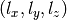

Requirements for the Input Files¶
In order to operate without problems, the input files of orbkit have to fulfill some requirements.
Table of Contents:
Cartesian Harmonic Gaussian basis sets¶
Internally, orbkit works with Cartesian Harmonic Gaussian basis sets. Unless otherwise stated (cf. Central Variables for details), it assumes the standard Molden basis function order for the exponents :
- s: (0,0,0)
- p: (1,0,0), (0,1,0), (0,0,1)
- d: (2,0,0), (0,2,0), (0,0,2), (1,1,0), (1,0,1), (0,1,1)
- f: (3,0,0), (0,3,0), (0,0,3), (1,2,0), (2,1,0), (2,0,1), (1,0,2), (0,1,2), (0,2,1), (1,1,1)
- g: (4,0,0), (0,4,0), (0,0,4), (3,1,0), (3,0,1), (1,3,0), (0,3,1), (1,0,3), (0,1,3), (2,2,0), (2,0,2), (0,2,2), (2,1,1), (1,2,1), (1,1,2)
Hint
Unless the exponents are not defined explicitly using “exp_list” in qc.ao_spec (cf. Central Variables for details), orbkit is restricted to s, p, d, f, and g atomic orbitals (Molden file limitation).
Real-Valued (Pure) Spherical Harmonic Gaussian basis sets¶
orbkit supports Spherical Harmonic Gaussian basis sets currently for Gaussian .log files (up to g atomic orbitals). After computing the Cartesian Gaussian basis set, it converts the atomic orbitals to a Spherical Harmonic Gaussian basis. The conversion procedure is adapted from
H.B. Schlegel and M.J. Frisch, International Journal of Quantum Chemistry, 54, 83 (1995).
Notes on the Input File Formats¶
Subsequently, you can find a brief overview of all available input file formats and some advices for the input file preparation.
Molden File Format:
- Contains Cartesian Harmonics by default
- Starts with [Molden Format]
- Contains the sections [Atoms], [GTO], [MO]
- If more than one [Molden Format] keyword is present, orbkit provides an interactive selection.
- How to create Molden files:
Attention
Molden files create using TURBOMOLE’s tm2molden program are not correctly orthonormalized! Please use AOMix files instead which can be created with t2aomix.
AOMix File Format:
- Contains Cartesian Harmonics by default
- Starts with [AOMix Format]
- Contains the sections [Atoms], [GTO], [MO]
- If more than one [AOMix Format] keyword is present, orbkit provides an interactive selection.
- How to create AOMix files:
- TURBOMOLE: t2aomix
GAMESS-US Output File:
- Please use Cartesian Harmonics (default)
- Hint: GAMESS-US uses a non-standard order of basis functions. Thus, the “exp_list” is explicitly defined in qc.ao_spec (cf. Central Variables for details)
GAUSSIAN .log File:
Spherical Harmonics are chosen by default
Use the following parameters in your root section
gfinput IOP(6/7=3)You may switch manually to Cartesian Harmonics using 6D 10F
If more than one “linked” file/geometry/atomic orbitals/molecular orbitals section is present in the .log file, orbkit provides an interactive selection.
GAUSSIAN Formatted Checkpoint File:
Contains Cartesian Harmonics by default
Not applicable for natural orbitals => occupation numbers are not printed
How to create FChk files:
Add %Chk=chkpt-file to your Gaussian input file
Use formchk to convert the chk file:
$ formchk chkpt-file formatted-file